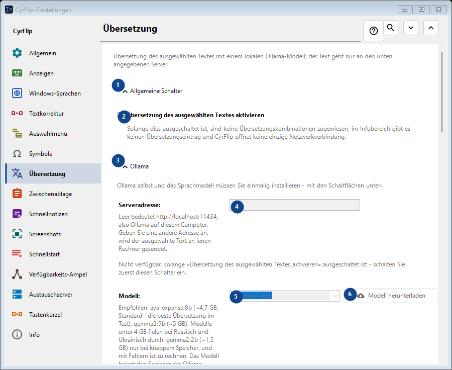
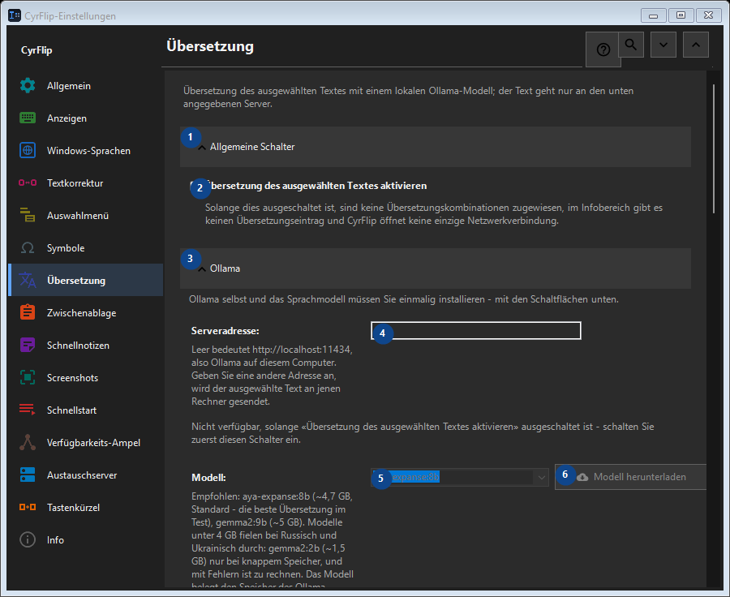

Übersetzung
Zweck
Übersetzung des ausgewählten Textes mit einem lokalen Ollama-Modell; der Text geht nur an den unten angegebenen Server.


Reihenfolge
Einstellungen gelten sofort. Eine feste Reihenfolge ist nicht nötig; nutzen Sie die Gruppen unten.
Elemente
1. Allgemeine Schalter
Nutzen Sie diesen Befehl für die genannte Aktion. Lesen Sie eine Bestätigung, bevor Sie zustimmen.
Ihre Tastenkürzel2. Übersetzung des ausgewählten Textes aktivieren
Solange dies ausgeschaltet ist, sind keine Übersetzungskombinationen zugewiesen, im Infobereich gibt es keinen Übersetzungseintrag und CyrFlip öffnet keine einzige Netzwerkverbindung.
Ihre Tastenkürzel3. Ollama
Nutzen Sie diesen Befehl für die genannte Aktion. Lesen Sie eine Bestätigung, bevor Sie zustimmen.
Ihre Tastenkürzel4. Serveradresse
Nicht verfügbar, solange «Übersetzung des ausgewählten Textes aktivieren» ausgeschaltet ist - schalten Sie zuerst diesen Schalter ein. Dieses Element ist derzeit nicht verfügbar. Aktivieren Sie zuerst die Funktion oder wählen Sie einen Eintrag.
Ihre Tastenkürzel5. Modell
Nicht verfügbar, solange «Übersetzung des ausgewählten Textes aktivieren» ausgeschaltet ist - schalten Sie zuerst diesen Schalter ein. Dieses Element ist derzeit nicht verfügbar. Aktivieren Sie zuerst die Funktion oder wählen Sie einen Eintrag.
Ihre Tastenkürzel6. Modell herunterladen - Modell
Nicht verfügbar, solange «Übersetzung des ausgewählten Textes aktivieren» ausgeschaltet ist - schalten Sie zuerst diesen Schalter ein. Dieses Element ist derzeit nicht verfügbar. Aktivieren Sie zuerst die Funktion oder wählen Sie einen Eintrag.
Ihre Tastenkürzel7. Ollama installieren
Nicht verfügbar, solange «Übersetzung des ausgewählten Textes aktivieren» ausgeschaltet ist - schalten Sie zuerst diesen Schalter ein. Dieses Element ist derzeit nicht verfügbar. Aktivieren Sie zuerst die Funktion oder wählen Sie einen Eintrag.
Ihre Tastenkürzel8. Ollama starten
Nicht verfügbar, solange «Übersetzung des ausgewählten Textes aktivieren» ausgeschaltet ist - schalten Sie zuerst diesen Schalter ein. Dieses Element ist derzeit nicht verfügbar. Aktivieren Sie zuerst die Funktion oder wählen Sie einen Eintrag.
Ihre Tastenkürzel9. Verbindung prüfen
Nicht verfügbar, solange «Übersetzung des ausgewählten Textes aktivieren» ausgeschaltet ist - schalten Sie zuerst diesen Schalter ein. Dieses Element ist derzeit nicht verfügbar. Aktivieren Sie zuerst die Funktion oder wählen Sie einen Eintrag.
Ihre Tastenkürzel10. Abbrechen
Nutzen Sie diesen Befehl für die genannte Aktion. Lesen Sie eine Bestätigung, bevor Sie zustimmen. Dieses Element ist derzeit nicht verfügbar. Aktivieren Sie zuerst die Funktion oder wählen Sie einen Eintrag.
Ihre Tastenkürzel11. Ollama beim Übersetzen automatisch starten
Nicht verfügbar, solange «Übersetzung des ausgewählten Textes aktivieren» ausgeschaltet ist - schalten Sie zuerst diesen Schalter ein. Dieses Element ist derzeit nicht verfügbar. Aktivieren Sie zuerst die Funktion oder wählen Sie einen Eintrag.
Ihre Tastenkürzel12. Modell im Speicher halten (Min.)
Nicht verfügbar, solange «Übersetzung des ausgewählten Textes aktivieren» ausgeschaltet ist - schalten Sie zuerst diesen Schalter ein. Dieses Element ist derzeit nicht verfügbar. Aktivieren Sie zuerst die Funktion oder wählen Sie einen Eintrag.
Ihre Tastenkürzel13. Ollama selbst und das Sprachmodell müssen Sie einmalig installieren - mit den Schaltflächen unten.
Wählen Sie den Wert zur benachbarten Beschriftung oder geben Sie ihn ein. Prüfen Sie ihn vor dem Fortfahren. Dieses Element ist derzeit nicht verfügbar. Aktivieren Sie zuerst die Funktion oder wählen Sie einen Eintrag.
Ihre Tastenkürzel14. Auf das Laden des Modells höchstens warten (s)
Nicht verfügbar, solange «Übersetzung des ausgewählten Textes aktivieren» ausgeschaltet ist - schalten Sie zuerst diesen Schalter ein. Dieses Element ist derzeit nicht verfügbar. Aktivieren Sie zuerst die Funktion oder wählen Sie einen Eintrag.
Ihre Tastenkürzel15. Ollama selbst und das Sprachmodell müssen Sie einmalig installieren - mit den Schaltflächen unten.
Wählen Sie den Wert zur benachbarten Beschriftung oder geben Sie ihn ein. Prüfen Sie ihn vor dem Fortfahren. Dieses Element ist derzeit nicht verfügbar. Aktivieren Sie zuerst die Funktion oder wählen Sie einen Eintrag.
Ihre Tastenkürzel16. Übersetzungsrichtungen
Nutzen Sie diesen Befehl für die genannte Aktion. Lesen Sie eine Bestätigung, bevor Sie zustimmen.
Ihre Tastenkürzel17. Richtung hinzufügen...
Nicht verfügbar, solange «Übersetzung des ausgewählten Textes aktivieren» ausgeschaltet ist - schalten Sie zuerst diesen Schalter ein. Dieses Element ist derzeit nicht verfügbar. Aktivieren Sie zuerst die Funktion oder wählen Sie einen Eintrag.
Ihre Tastenkürzel18. Ergebnis
Nutzen Sie diesen Befehl für die genannte Aktion. Lesen Sie eine Bestätigung, bevor Sie zustimmen.
Ihre Tastenkürzel19. Übersetzung in die Zwischenablage legen
Nicht verfügbar, solange «Übersetzung des ausgewählten Textes aktivieren» ausgeschaltet ist - schalten Sie zuerst diesen Schalter ein. Dieses Element ist derzeit nicht verfügbar. Aktivieren Sie zuerst die Funktion oder wählen Sie einen Eintrag.
Ihre Tastenkürzel20. Übersetzung sofort anstelle der Auswahl einfügen
Nicht verfügbar, solange «Übersetzung des ausgewählten Textes aktivieren» ausgeschaltet ist - schalten Sie zuerst diesen Schalter ein. Dieses Element ist derzeit nicht verfügbar. Aktivieren Sie zuerst die Funktion oder wählen Sie einen Eintrag.
Ihre Tastenkürzel21. Ausgangstext neben der Übersetzung anzeigen
Nicht verfügbar, solange «Übersetzung des ausgewählten Textes aktivieren» ausgeschaltet ist - schalten Sie zuerst diesen Schalter ein. Dieses Element ist derzeit nicht verfügbar. Aktivieren Sie zuerst die Funktion oder wählen Sie einen Eintrag.
Ihre Tastenkürzel22. Fenster schließen nach (Sek.)
Nicht verfügbar, solange «Übersetzung des ausgewählten Textes aktivieren» ausgeschaltet ist - schalten Sie zuerst diesen Schalter ein. Dieses Element ist derzeit nicht verfügbar. Aktivieren Sie zuerst die Funktion oder wählen Sie einen Eintrag.
Ihre Tastenkürzel23. Nicht verfügbar, solange «Übersetzung des ausgewählten Textes aktivieren» ausgeschaltet ist - schalten Sie zuerst diesen Schalter ein.
Wählen Sie den Wert zur benachbarten Beschriftung oder geben Sie ihn ein. Prüfen Sie ihn vor dem Fortfahren. Dieses Element ist derzeit nicht verfügbar. Aktivieren Sie zuerst die Funktion oder wählen Sie einen Eintrag.
Ihre Tastenkürzel